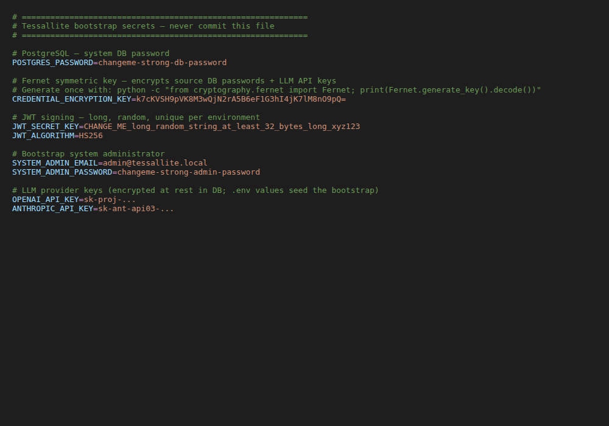

Credentials and the .env File

Why credentials are not in the UI
By design, bootstrap secrets stay out of ordinary database-backed settings tables. Source database passwords and LLM API keys are encrypted in the database with the Fernet key; the Fernet encryption key, JWT signing key, and bootstrap administrator password live in .env on the host. The UI surfaces environment values in the System Configuration page's read-only Environment tab — masked — so an operator can verify what is in effect without exposing any secret.
For Community Edition, .env is created by install.sh in the signed release bundle. After install, you manage the licence entirely from the browser on the System Admin → License & edition screen — see below.
This separation keeps two important properties true:
- Database snapshots, audit logs, and replication streams never contain a plaintext credential.
- Rotating a bootstrap credential is a host-level operation (edit
.env, restart) that does not require touching the database.
Installing or replacing a licence

The Licence Manager card is for system administrators only. It shows the current edition, whether enforcement is enabled, and whether a licence is installed.
To get a licence, use the Get a license button on the Edition & capacity card — it opens the registration page at tessallite.io where you obtain your signed license.json.
To install or replace it, use the Upload license file button on the Licence Manager card:
- Choose your signed
license.json. Tessallite verifies it (signature and expiry) before applying it; a rejected, expired, or wrongly signed licence is refused and the current licence is untouched. - A valid licence is stored in the platform database and applied immediately — no restart.
- Because the licence lives in the database rather than a file, this works on every deployment, including read-only/serverless hosts such as Cloud Run. You do not need to configure a verification key or a writable licence file; the public verification key is built in.
Required variables
| Variable | Purpose |
|---|---|
CREDENTIAL_ENCRYPTION_KEY | Fernet symmetric key used to encrypt every source-DB and LLM provider credential at rest. Generate once with python -c "from cryptography.fernet import Fernet; print(Fernet.generate_key().decode())". It can be rotated without downtime using the dual-key window described in Rotating a secret below — you no longer have to choose between leaking a key forever and losing every stored credential. |
JWT_SECRET_KEY | HMAC signing key for issued JWTs. Long, random, and unique per environment. Rotation invalidates every active session. |
POSTGRES_PASSWORD | System database password. Used in the constructed DSN unless SYSTEM_DATABASE_URL is set explicitly. |
SYSTEM_ADMIN_EMAIL | Login email for the bootstrap system administrator. Default admin@tessallite.local. |
SYSTEM_ADMIN_PASSWORD | Password for the bootstrap system administrator. |
LICENSE_FILE_HOST | Legacy/bootstrap host path to a signed licence file, normally ./license.json in the bundle directory. The active uploaded licence is stored in the platform database. |
LICENSE_PUBLIC_KEYS | Optional public verification key override. Normal installs use the built-in Tessallite public key. |
Optional but recommended
| Variable | Purpose |
|---|---|
SYSTEM_DATABASE_URL | Full DSN override when PostgreSQL lives outside the docker-compose stack. |
JWT_ALGORITHM | JWT signing algorithm. Default HS256. |
JDBC_PORT, XMLA_PORT | Gateway listen ports. Defaults 5433 and 8080. |
QUERY_ROUTER_URL, MODEL_SERVICE_URL, OPTIMIZER_URL | Internal service URLs. Defaults assume the docker-compose service names. |
CORS_ORIGINS | Comma-separated CORS allow-list. Set to override the default loopback list entirely. |
CORS_LAN_IP | Optional LAN IP that gets prepended to the default CORS list (handy for testing the SPA from another machine on the same network without overriding the whole list). |
CREDENTIAL_ENCRYPTION_KEY_PREVIOUS | Comma-separated list of old encryption keys, set only during a key-rotation window. While set, the platform encrypts new values with CREDENTIAL_ENCRYPTION_KEY and can still decrypt anything that was written under a listed previous key. Leave it unset in normal running; add the old key here when you start a rotation, and remove it once the rotation is complete. |
LICENSE_ENFORCEMENT_ENABLED | Leave true for normal installs. When false, the stack starts unactivated and create operations remain disabled by edition policy. |
LLM provider keys
LLM API keys are never written to the database settings tables. When you create an LLM Provider Config row from the Model Builder Settings panel, the API key you supply is encrypted with CREDENTIAL_ENCRYPTION_KEY before it is stored in llm_provider_configs. To seed the bootstrap value, set the relevant variable in .env (e.g. OPENAI_API_KEY, ANTHROPIC_API_KEY, DEEPSEEK_API_KEY) and the bootstrap script reads it.
The non-secret routing fields — provider base URLs, model-name suggestions, the Anthropic API version header — live in system_settings under the llm.* keys and are editable from System Admin → Configuration.
Rotating a secret
- Edit
.envon the host with the new value. - Restart the relevant service:
`` docker compose restart model-service docker compose restart gateway docker compose restart query-router docker compose restart optimizer docker compose restart scheduler ``
- For
JWT_SECRET_KEY: every active session is invalidated; users will be prompted to log in again. - For
CREDENTIAL_ENCRYPTION_KEY(the Fernet key that encrypts every stored credential): rotate it without downtime using the built-in dual-key window. The encryption layer usesMultiFernet, which encrypts with the current key but can decrypt with any of a list of keys, so old and new keys coexist while you migrate:- Generate a new key (same command as above).
- Move the current key into
CREDENTIAL_ENCRYPTION_KEY_PREVIOUSand put the new key inCREDENTIAL_ENCRYPTION_KEY. - Restart the services. New writes use the new key; everything already stored still decrypts under the previous key.
- Re-encrypt every stored credential by calling, as a system administrator,
POST /api/v1/admin/rotate-credentials— it walks every project connection and LLM provider config and re-writes it with the current key. - When that call reports zero failures, remove
CREDENTIAL_ENCRYPTION_KEY_PREVIOUSand restart again. The old key is now fully retired.
CREDENTIAL_ENCRYPTION_KEYby editing.envalone and skipping the dual-key window — without the previous key kept readable, every stored credential becomes undecryptable. The full operator procedure is in the Secret Rotation Runbook.
What lives where
| Item | Lives in |
|---|---|
| Source DB passwords (per project_connection) | project_connections.encrypted_credentials — encrypted with CREDENTIAL_ENCRYPTION_KEY |
| LLM API keys (per llm_provider_config) | llm_provider_configs.encrypted_api_key — encrypted with the same key |
| JWT signing key, Fernet key, system admin password | .env only |
| Signed licence document | Uploaded from System Admin → License & edition, stored in system_settings as license.document; downloaded license.json files are operator records |
| JWT lifetime, rate limits, scheduler cadences, etc. | system_settings table (editable from the UI) |
Never commit.envorlicense.jsonto source control..env.exampleis the safe template to commit. Back up.envsecurely with the installation, and keep downloaded licence files in a secure operator archive.